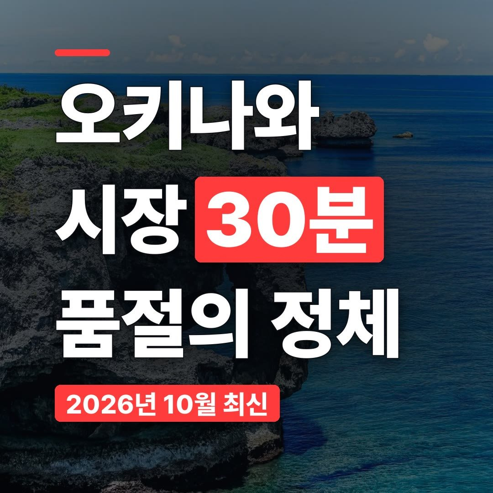
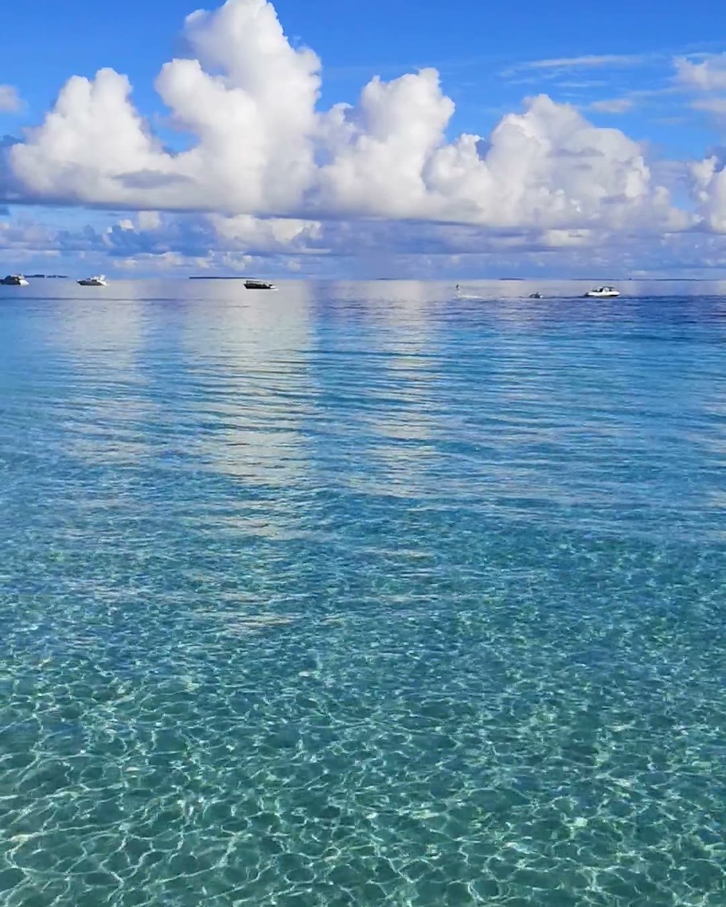
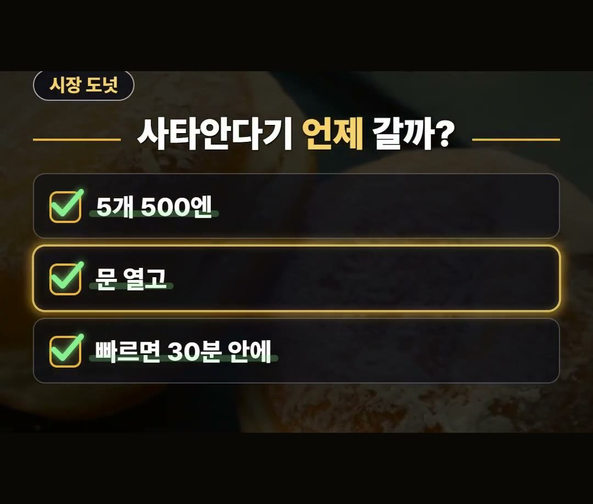
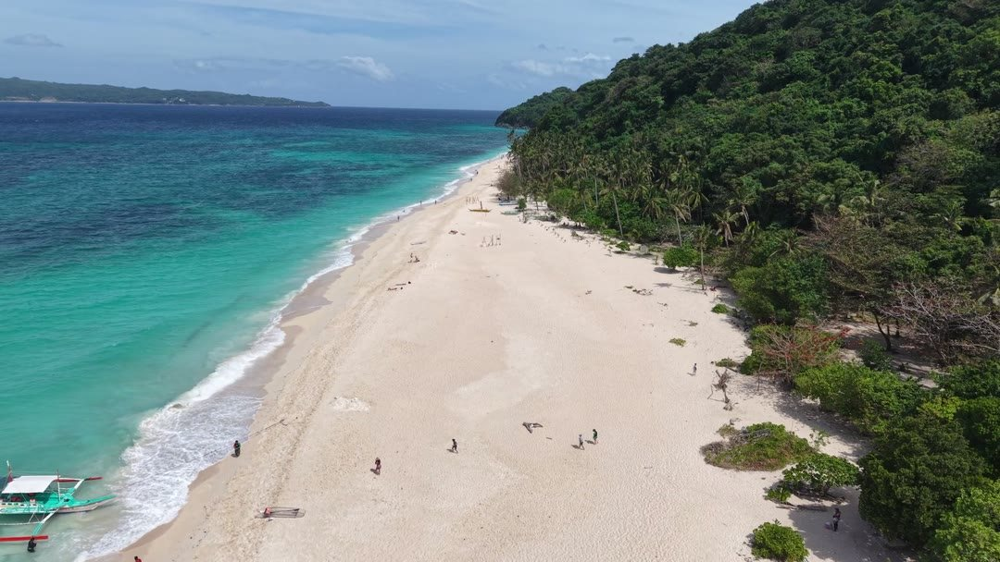
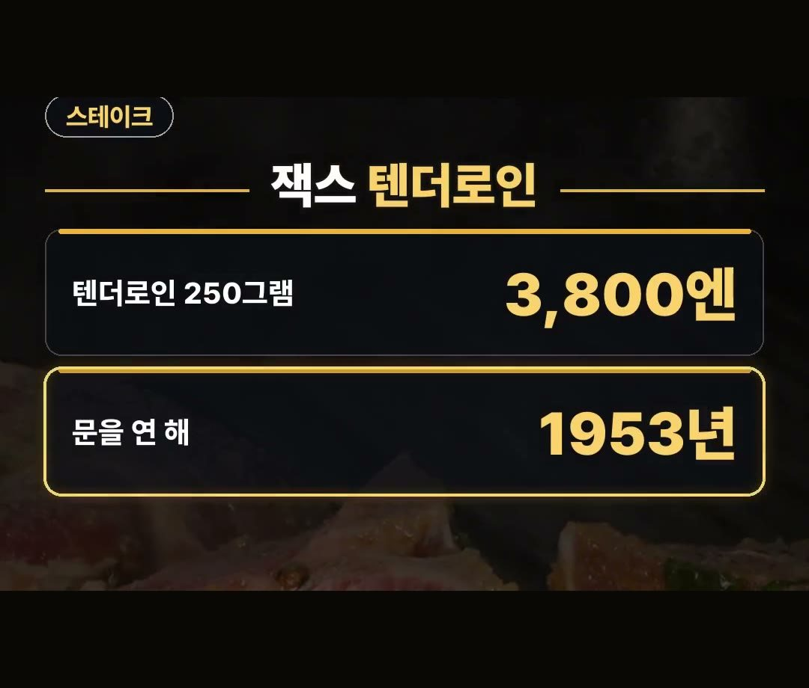
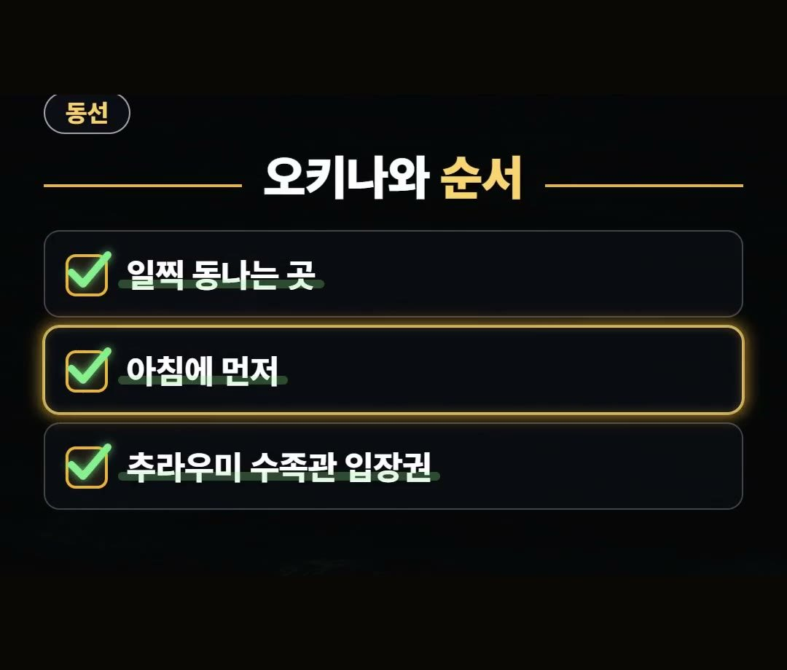

오키나와 맛집 리스트, 빠르면 30분에 동나는 시장 도넛과 소바 원조집
※ 이 글에는 제휴 링크가 포함되어 있으며, 링크를 통해 예약·구매하시면 일정 수수료를 받을 수 있습니다. (가격은 같습니다)
※ 이 포스팅은 쿠팡 파트너스 활동의 일환으로, 이에 따른 일정액의 수수료를 제공받습니다.
같은 오키나와 소바 가게에서도 타카에스 소바의 유시두부 소바 큰 그릇은 900엔, 소키 소바 중간은 950엔으로 값이 나뉘어요.
오키나와 맛집은 값만큼 다 팔리는 시간도 함께 봐야 헛걸음이 없습니다.
이 글에서는 시장 도넛, 소바 원조집, 스테이크집까지 값과 조건을 한 번에 정리했어요.
마키시 시장 2층 아유미의 사타안다기는 5개 500엔인데, 빠르면 문 열고 30분 안에 다 팔린다고 해요.
시장에 가는 날은 이 가게부터 들르는 순서로 기억하세요! 🍩

오키나와 맛집 리스트, 다 팔리는 시간부터
오키나와 맛집을 고를 때는 문 여는 시간보다 다 팔리는 시간을 먼저 챙기는 게 좋아요.
오늘 정리한 곳은 아래 세 곳입니다.
- 아유미: 마키시 시장 2층 · 사타안다기 5개 500엔
- 타카에스 소바: 유시두부 소바 원조로 알려진 집
- 잭스 스테이크 하우스: 1953년 문을 연 집
아유미와 타카에스 소바는 일찍 다 팔리는 일이 있는 가게라, 일정 앞쪽에 두면 마음이 편해요.
하루 순서로 나눠 보면 문 여는 시간에 맞춰 시장의 아유미, 이른 점심으로 타카에스 소바, 저녁은 잭스 스테이크 하우스처럼 다 팔리는 가게를 앞에 두는 방식이 있어요.

마키시 시장 2층 아유미 사타안다기
아유미는 마키시 시장 2층에 있는 사타안다기 가게예요.
값은 5개에 500엔이라 여럿이 나눠 맛보기에도 괜찮은 단위입니다.
- 자리: 마키시 시장 2층
- 값: 5개 500엔
- 품절: 빠르면 문 열고 30분 안에
늘 30분 만에 끝나는 것은 아니지만, 빠른 날에는 그만큼 일찍 동난다는 점을 기억해 두세요.

유시두부 소바 원조로 알려진 타카에스 소바
타카에스 소바는 유시두부 소바가 처음 나온 집으로 알려져 있어요.
이 집도 일찍 다 팔리기도 해서 늦은 오후보다 이른 시간이 낫습니다.
- 유시두부 소바 큰 그릇: 900엔
- 소키 소바 중간: 950엔
원조로 알려진 메뉴를 맛보고 싶다면 유시두부 소바, 다른 소바도 궁금하다면 소키 소바를 견줘 보세요.

1953년 문을 연 잭스 스테이크 하우스
잭스 스테이크 하우스는 1953년에 문을 연 스테이크집이에요.
텐더로인 값은 아래와 같습니다.
- 문을 연 해: 1953년
- 텐더로인 250그램: 3,800엔
오키나와 맛집 가운데 오래 이어 온 집을 한 곳 넣고 싶다면 일정에 함께 넣어 보세요.

일찍 동나는 곳부터, 북부는 따로
시장 도넛처럼 일찍 동나는 곳은 아침에 먼저 들르는 순서가 좋아요.
- 일찍 동나는 곳: 아침에 먼저
- 북부로 가는 날: 수족관 일정 따로
북부로 가는 날이라면 추라우미 수족관 입장권도 함께 챙겨 두세요.
해외에서 쓸 데이터는 이심으로 미리 준비해 두세요.
클룩에서는 2월 28일까지 일본·한국 겨울 투어 및 활동 15% 할인 코드를 쓸 수 있어요.
최대 1만 3천 원까지라 조건을 보고 쓰세요.

정리
- 아유미 사타안다기는 5개 500엔, 빠르면 문 열고 30분 안에 다 팔림
- 타카에스 소바는 유시두부 소바 큰 그릇 900엔, 소키 소바 중간 950엔
- 잭스 스테이크 하우스는 1953년에 문을 연 집, 텐더로인 250그램 3,800엔
오키나와 맛집은 다 팔리는 시간을 먼저 보고 순서를 짜면 헛걸음을 줄일 수 있어요.
예약 링크는 아래에 모아 두었어요.
지금 쓸 수 있는 여행사 할인
- 📶 해외 데이터는 이심으로 미리 · 마이리얼트립 마이심 「일본 50% 1,400원~」 · 2개 이상 추가 할인 (마이심 화면 표시 기준 · 10/5 확인 · 값은 바뀔 수 있음)
- 🎟 클룩 일본·한국 겨울 투어 15% 할인 코드 「TNA2026JPKRWINTER15OFF」 (최대 1만 3천 원 · 2월 28일까지)
- 🎟 클룩 일본 어트랙션 5% 할인 코드 「일본어트랙션5%」 (최소 구매 금액 없음 · 최대 4천 원 · 일부 상품 제외 · 쿠폰 취소 시 재발행 불가 · 예산 소진 시 조기 종료 · 12월 31일까지)
※ 여행사 사정으로 조건이 바뀌거나 일찍 끝날 수 있어요. 예약 전에 여행사 화면에서 한 번 더 확인하세요. (2026-10-05 확인)
📘 무료 여행 가이드 전자책 모음 보기 (오사카 · 후쿠오카 · 타이베이 · 도쿄 · 일본겨울) ›
📌 2026년 10월 기준 정보예요. 가격은 환율·시기에 따라 달라질 수 있어요.
사진·영상: Pexels (A Q, Ahmed Abd Allah, Anh Nguyen, Dwyght Simpson, IslandHopper X, Miranda Ajdini)